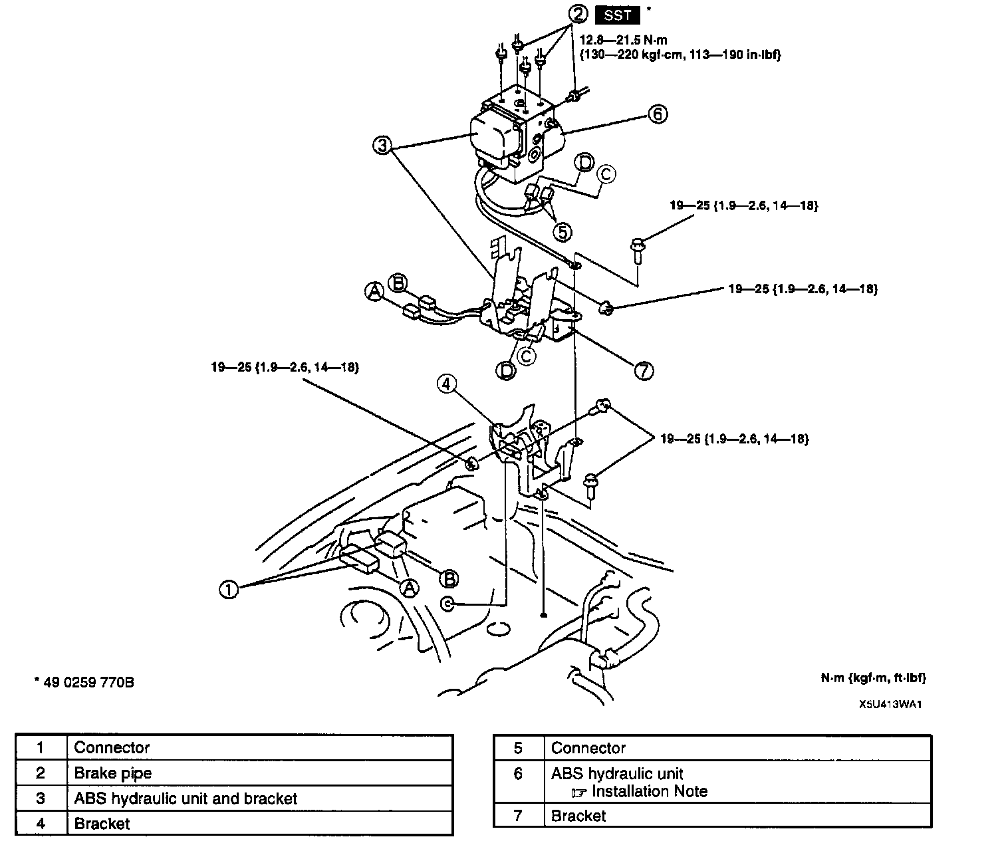
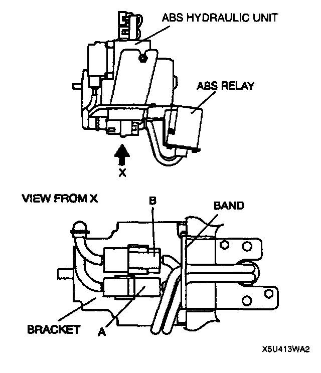

Hydraulic Control Assembly - Antilock Brakes: Service and Repair
ABS HYDRAULIC UNIT REMOVAL/INSTALLATION
1. Remove in the order indicated in the table.
2. Install in the reverse order of removal.
ABS Hydraulic Unit Installation Note

1. Pass the connector from the ABS HU under the bracket, then connect it with connectors A and B from the ABS relay.
2. Insert the clip for connector A into the bracket hole.
3. Gather the slack in the harness from the ABS relay and tie it with a band to the bracket.